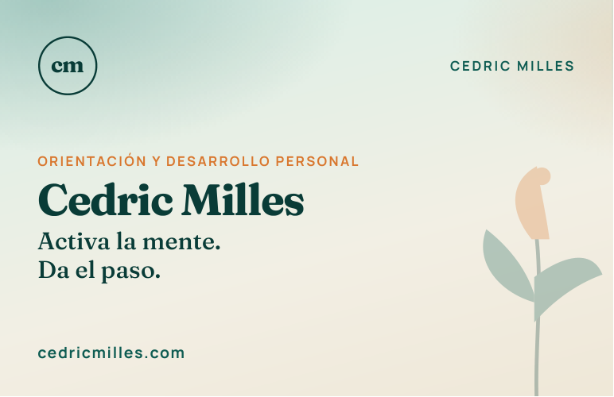
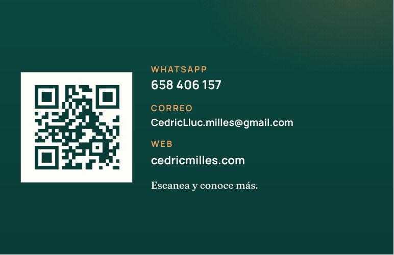

Cedric Milles · Orientación y desarrollo personal
Tarjeta de empresa
Tarjeta de visita 85 × 55 mm, a juego con el tríptico: menta, arena y naranja. Frente con la marca y dorso con QR, WhatsApp y correo para dejar en centros, clubes y empresas.


Cómo imprimirla
- Imprenta: envía Cedric-Milles-tarjeta.pdf. Son 2 páginas de 85 × 55 mm (frente y dorso), el tamaño estándar en España.
- En casa: imprime la hoja A4 a doble cara, A4 vertical, voltear por el lado largo, sin márgenes.
- Recorta por las marcas. Cada hoja saca 8 tarjetas.
- El QR apunta a cedricmilles.com. El teléfono es WhatsApp: 658 406 157.